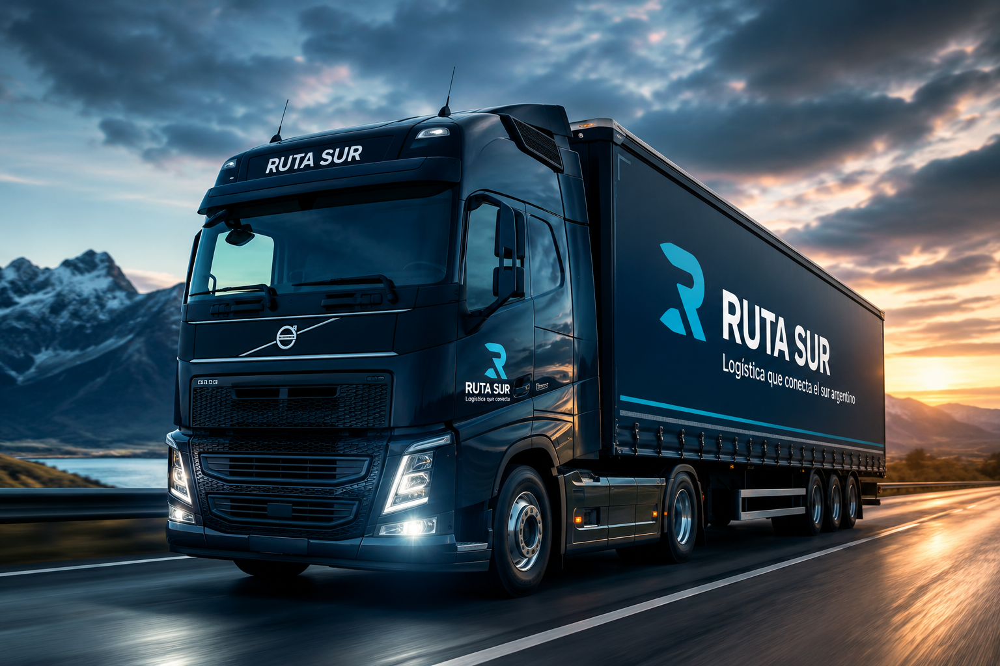
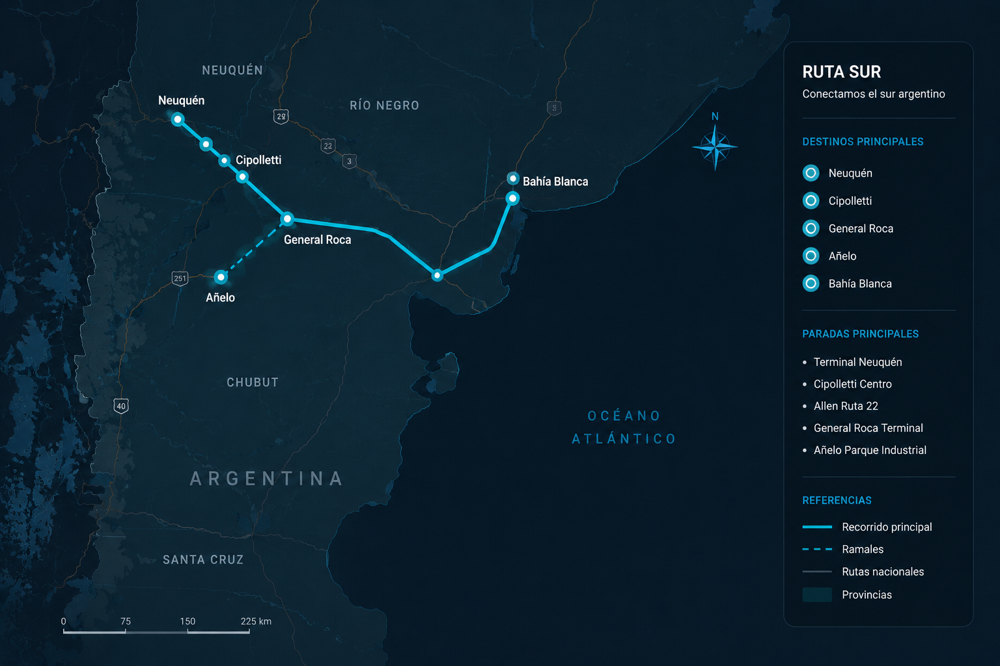

Logística terrestre para conectar el sur argentino
Ruta Sur ofrece transporte de cargas industriales, comerciales y regionales mediante una red logística segura, moderna y eficiente.

Información del servicio
Ruta Sur
Empresa de transporte y logística terrestre especializada en cargas industriales, comerciales y regionales dentro del sur argentino.
Destinos principales
- Neuquén
- Cipolletti
- General Roca
- Añelo
- Bahía Blanca
Paradas Principales
- Terminal Neuquén
- Cipolletti Centro
- Allen Ruta 22
- General Roca Terminal
- Añelo Parque Industrial
Horarios del Servicio
| Destinos | Salidas | Frecuencias |
|---|---|---|
| Neuquén | 08:00 | Cada 2 Horas |
| Cipolletti | 09:30 | Cada 3 Horas |
| General Roca | 11:00 | Cada 4 Horas |
Mapa y ubicación
El recorrido principal conecta distintos puntos logísticos del sur argentino, integrando centros operativos, zonas industriales y nodos regionales.

Accesibilidad
- Rampas de acceso en terminales prncipales.
- Espacios reservados para silla de ruedas.
- Señalización visual clara y legible.
- Contraste de colores para facilitar la lectura.
- Información visible sobre horarios y recorridos.